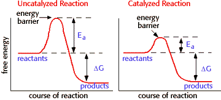

Energy, Enzymes, and Catalysis Problem Set
Problem 1 Tutorial: Features of enzyme catalyzed reactions.
Which statement about enzyme catalyzed reactions is NOT true?
A. enzymes form complexes with their substrates. B. enzymes lower the activation energy for chemical reactions. C. enzymes change the Keq for chemical reactions. D. many enzymes change shape slightly when substrate binds. E. reactions occur at the "active site" of enzymes, where a precise 3D orientation of amino acids is an important feature of catalysis.
Features of Enzyme Catalyzed Reactions

Enzymes are biological catalysts. Catalysts lower the activation energy for reactions. The lower the activation energy for a reaction, the faster the rate. Thus enzymes speed up reactions by lowering activation energy. Many enzymes change shape when substrates bind. This is termed "induced fit", meaning that the precise orientation of the enzyme required for catalytic activity can be induced by the binding of the substrate.
Enzymes have active sites. The enzyme active site is the location on the enzyme surface where substrates bind, and where the chemical reaction catalyzed by the enzyme occurs. There is a precise substrate interaction that occurs at the active site stabilized by numerous weak interactions (hydrogen bonds, electrostatic interactions, hydrophobic contacts, and van der Waals forces).
Enzymes form complexes with their substrates. The binding of a substrate to an enzyme active site is termed the "enzyme-substrate complex." A generic equation for complex formation is as follows:

- Enzymes do not:
-
Change the equilibrium constant for a reaction. Keq depends only on the difference in energy level between reactants and products.
Change ΔG for a reaction. As shown in the graphs above, enzymes only lower activation energy, but do not change the difference in energy levels between reactants and products.
Convert a nonspontaneous reaction into a spontaneous reaction.


Department of Biochemistry and Molecular Biophysics
University of Arizona
Revised: October 2004
Contact the Development Team
http://biology.arizona.edu
All contents copyright © 1996. All rights reserved.